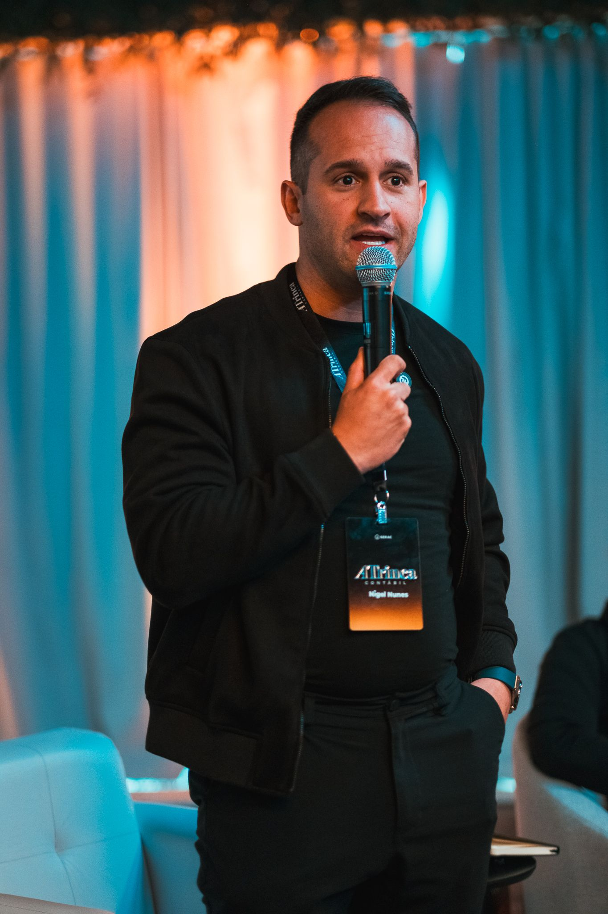

Se sua empresa parar, sua renda também para?
Você construiu uma empresa para gerar renda. Agora, como está construindo patrimônio fora dela?
Use o consórcio imobiliário como ferramenta de planejamento e alavancagem patrimonial para estruturar novas aquisições sem depender exclusivamente do caixa da sua empresa.

Sua empresa pode ser seu maior ativo. Mas ela não deveria ser sua única fonte de patrimônio.
É comum o empresário construir uma operação forte, aumentar o faturamento e reinvestir praticamente tudo dentro da própria empresa. O problema aparece quando grande parte da renda e do patrimônio continua concentrada no mesmo lugar.
O que significa alavancar patrimônio?
Estruturar uma estratégia para aquisição de ativos utilizando crédito planejado e organização financeira, buscando ampliar a capacidade de aquisição sem comprometer todo o capital disponível.
Quanto do seu capital precisa realmente estar imobilizado?
Ao utilizar o consórcio em vez de comprar um imóvel à vista, você preserva sua liquidez para outras oportunidades. Manter capital disponível traz flexibilidade e capacidade de resposta ao mercado.

Você não precisa depender apenas do sorteio.
Para quem possui capital, o lance é a ferramenta estratégica para buscar a antecipação do crédito. É a união do capital disponível com a eficiência do grupo.
Planejamento vs. Imediatismo
| CRITÉRIO | CONSÓRCIO | FINANCIAMENTO |
|---|---|---|
| Juros | Taxa de adm. e encargos contratuais (sem juros) | Juros bancários e encargos da operação |
| Acesso ao Bem | Depende da contemplação (Sorteio/Lance) | Imediato após aprovação e contratação |
| Perfil | Planejamento de médio/longo prazo | Necessidade imediata de moradia/uso |
Uma estrutura de contemplação pensada para diferentes estratégias.
Sorteio
Lance Ello
Ello Bronze
Ello Prata
Ello Ouro
Sorteio Diamante
Lance Livre
Simule sua Estratégia
Quem está por trás dessa estratégia?
Nigel Nunes é empresário e especialista em estratégias de alavancagem patrimonial. Sua atuação é focada em transformar o consórcio em uma ferramenta de inteligência financeira para quem busca expandir ativos sem descapitalizar o caixa operacional.